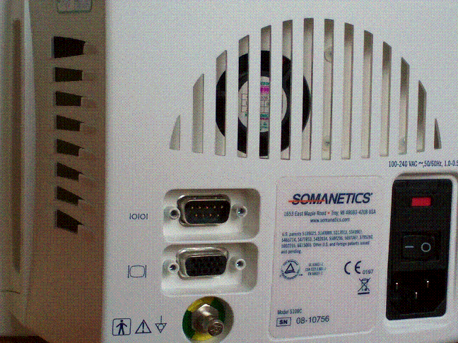
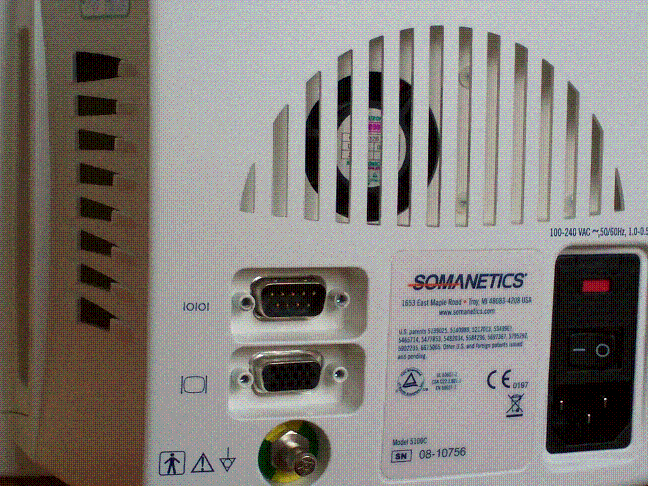
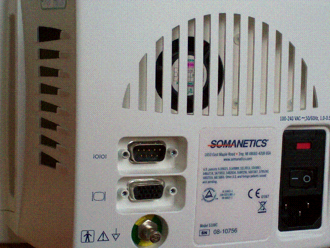

 Supported devices: Somanetics Invos 5100C
Release 1.10.0.0
Document reference: 1a
Known issues:
Please read the following description carefully and ensure the cable in use matches the monitor.
The driver supports serial (RS232) connections.
The serial port of the device is rear facing, top left, marked 10101

The device requires a null serial cable with the standard pin layout
Fixed baud rate must be used - Autospeed is not supported.
| Baud rate | 9600 |
| Parity | None |
| Data bits | 8 |
| Stop bits | 1 |
| Flow control | None |
| ID | Sources | Acronym | Common Term | Description | |
| Primary | 107:825:828:823 | 1, 2, 3, 4 | Lower Limit Alarm Alert | Lower alarm limit exceeded | |
| Sub | 79:331-660:175:502 | rSO2 | rSO2 | Cerebral regional oxygen saturation | |
| Primary | 107:825:827:823 | 1, 2, 3, 4 | Upper Limit Alarm Alert | Upper alarm limit exceeded | |
| Sub | 79:331-660:175:502 | rSO2 | rSO2 | Cerebral regional oxygen saturation | |
| Primary | 833:825:828:823 | 1, 2, 3, 4 | Lower limit alarm setting | Setting of lower alarm limit | |
| Sub | 79:331-660:175:502 | rSO2 | rSO2 | Cerebral regional oxygen saturation | |
| Primary | 833:825:827:823 | 1, 2, 3, 4 | Upper limit alarm setting | Setting of a upper limit alarm | |
| Sub | 79:331-660:175:502 | rSO2 | rSO2 | Cerebral regional oxygen saturation | |
| Primary | 79:331-660:175:502 | 1, 2, 3, 4 | rSO2 | rSO2 | Cerebral regional oxygen saturation |
| Sub | 79:331-660:175:502 | rSO2 | rSO2 | Cerebral regional oxygen saturation | |
| Primary | 1079::1056:1060 | 1, 2, 3, 4 | Event marker | Marking the time of an event | |
| Sub | |||||
| Primary | 107:826:846:845 | 1, 2, 3, 4 | Sensor disconnected | Warning, sensor disconnected | |
| Sub | 79:331-660:175:502 | rSO2 | rSO2 | Cerebral regional oxygen saturation | |
| Primary | 1076:862-895-967:1053:1060 | 1, 2, 3, 4 | Light interference with measurement | Error Event: Light Interference (SPO2 measurement, special kind of interference) | |
| Sub | 79:331-660:175:502 | rSO2 | rSO2 | Cerebral regional oxygen saturation | |
| Primary | 1076:965:1059:1060 | 1, 2, 3, 4 | Disturbed | Signal is disturbed | |
| Sub | 79:331-660:175:502 | rSO2 | rSO2 | Cerebral regional oxygen saturation | |
| Primary | 107:1034:852:1060 | 1, 2, 3, 4 | Signal detected | Signal detected | |
| Sub | 79:331-660:175:502 | rSO2 | rSO2 | Cerebral regional oxygen saturation | |
| Primary | 107:826:835:834-836 | 1, 2, 3, 4 | Low battery | Warning, low battery | |
| Sub | |||||
| Primary | 107:825:185: | 1, 2, 3, 4 | Device error | Alert, error in device operation | |
| Sub | |||||
| Primary | 1076:969:1059:1060 | 1, 2, 3, 4 | Noisy | Signal is noisy | |
| Sub | 79:331-660:175:502 | rSO2 | rSO2 | Cerebral regional oxygen saturation | |
| Primary | 107:825:846:859 | 1, 2, 3, 4 | Sensor inoperable | Alert, sensor inoperable | |
| Sub | 79:331-660:175:502 | rSO2 | rSO2 | Cerebral regional oxygen saturation | |
| Primary | 1076:1028:1052:1060 | 1, 2, 3, 4 | Lost communication | Error Event: Communication Lost | |
| Sub | |||||
| Primary | 88:123-337-367:: | 1, 2, 3, 4 | AUC | Area under a curve | Area under a curve |
| Sub | 79:331-660:175:502 | rSO2 | rSO2 | Cerebral regional oxygen saturation | |
| Primary | 833:::823 | 1, 2, 3, 4 | Device Setting | Device Setting | |
| Sub | 79:331-660:175:502 | rSO2 | rSO2 | Cerebral regional oxygen saturation | |
| Primary | 112:858:169:263 | 1, 2, 3, 4 | BVI | Blood volume index | Blood volume index |
| Sub | |||||